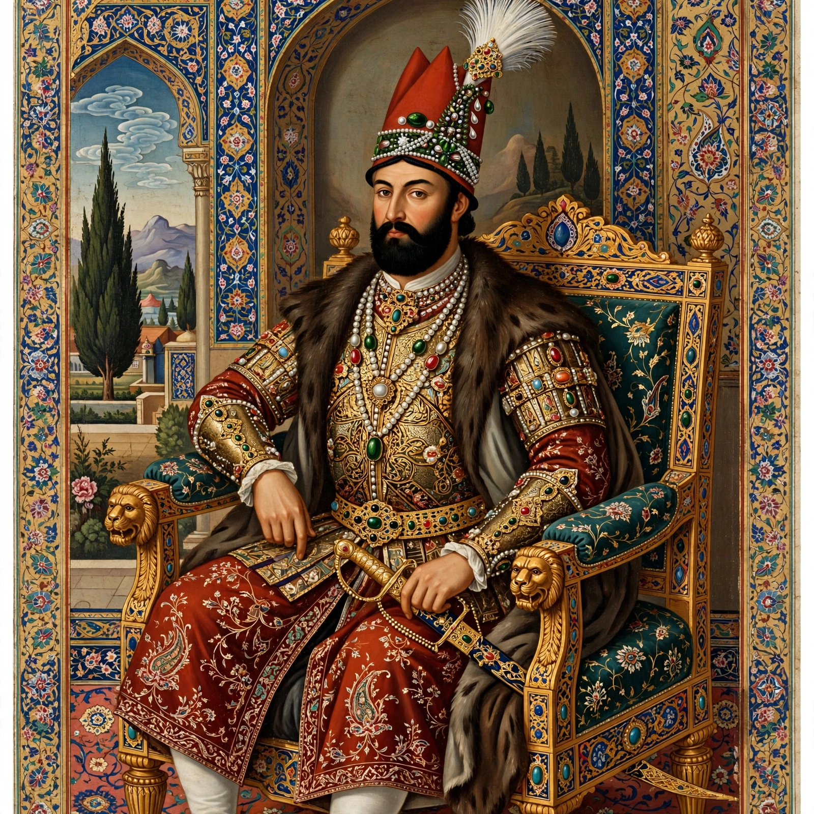

Nader Shah Afshar (Persian: نادر شاه افشار; born Nadr Qoli; August 1688 – 20 June 1747) was the founder of the Afsharid dynasty of Iran and one of the most powerful rulers in Iranian history. Rising from humble origins in Khorasan, he reunified Iran after the Afghan Hotak occupation, deposed the Safavids, and campaigned as far as Delhi and Central Asia; he has been called the 'Napoleon of Persia' or the 'Second Alexander'.

| Shah of Iran | 8 March 1736 – 20 June 1747 |
|---|---|
| Predecessor | Abbas III (Safavid) |
| Successor | Adel Shah |
| Born | August 1688, Dastgerd, Safavid Iran |
| Died | 20 June 1747, Quchan (assassinated) |
| Dynasty | Afsharid |
Nader served Tahmasp II against the Afghans, defeating Ashraf Hotak in 1729 and restoring nominal Safavid rule, then deposed Tahmasp and his infant son Abbas III, crowning himself in 1736 on the Mughan plain. He campaigned against the Ottomans and Russians, restoring Iran's borders.
In 1739 Nader crushed the Mughal army at Karnal and occupied Delhi; after a revolt, a massacre followed. He carried off enormous treasure including the Peacock Throne, the Koh-i-Noor and Darya-i-Noor diamonds, allowing him to remit Iranian taxes for three years.
His later reign grew brutal and paranoid, especially after an assassination attempt led him to blind his son Reza Qoli. Heavy taxation provoked revolts, and officers assassinated him in 1747; his empire fragmented swiftly. His tomb is in Mashhad. Historians credit him as a military genius who restored Iranian sovereignty, while condemning his cruelty.